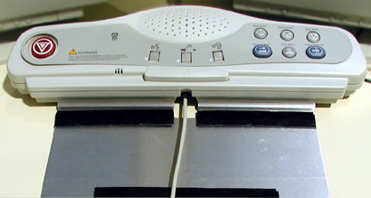
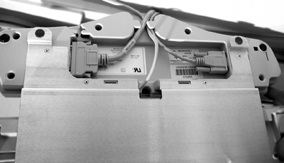
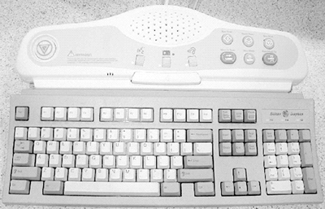

Operating Documentation
Direction 5114043-800, Rev# 9
LightSpeed 3.X Service Methods (Advanced)
Operating Documentation |
| Required Persons | Preliminary Reqs | Procedure | Finalization |
|---|---|---|---|
| 1 |
| Item | Qty | Effectivity | Part# | Manufacturer | |
|---|---|---|---|---|---|
| SCIM/Keyboard | 1 | - | - | - | |
From the service desktop, shut down the system, then turn off console power.
Remove the existing keyboard cable from the left-hand port on the top of the console front bulkhead.
CONNECTING THE KEYBOARD, TRACKBALL, AND MOUSE
Route the keyboard cables under the SCIM, as shown in Illustration 1 and Illustration 2.
Illustration 1: SCIM with keyboard cable routed through cable opening

Illustration 2: SCIM bottom, showing cables and keyboard mounting bracket.

Connect the mouse and keyboard cables to the proper ports (mouse on right, keyboard at left) on the console front bulkhead.
Route the trackball cable and connect it directly to the SCIM.
The SCIM cable is run under the monitor table top, through the slot at the rear of the console, and connected to J19 on the recon box front bulkhead.
| NOTE: | To replace the SCIM cable, the console front cover must be removed. See “Front Cover,” on page 349, for details. |
Select and install the proper overlay for your system: (1) with Tilt or (2) without tilt.
The keyboard should attach to the SCIM using the supplied Velcro strip and fit snugly against the SCIM when finished, as shown in Illustration 3.
Illustration 3: SCIM connected to the keyboard with the US English tilt overlay installed.

Check all cable connections. Turn on console power and check that the console boots without errors. At the application level, complete functional checks of the keyboard and SCIM. Set voice controls and listening volumes to appropriate levels.
No finalization required.